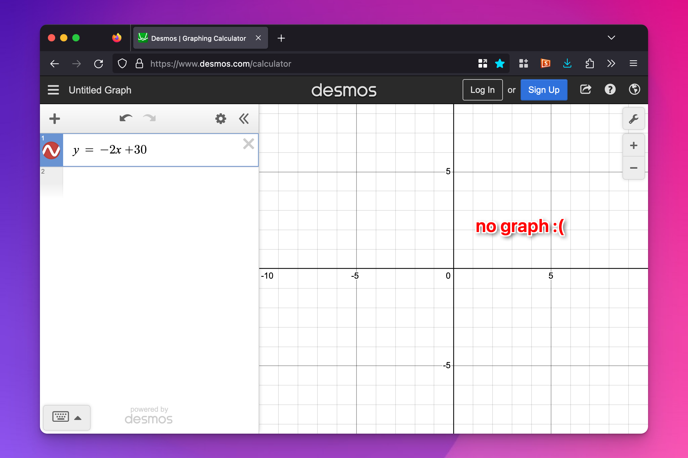
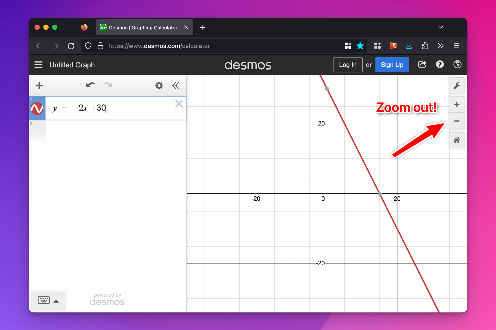
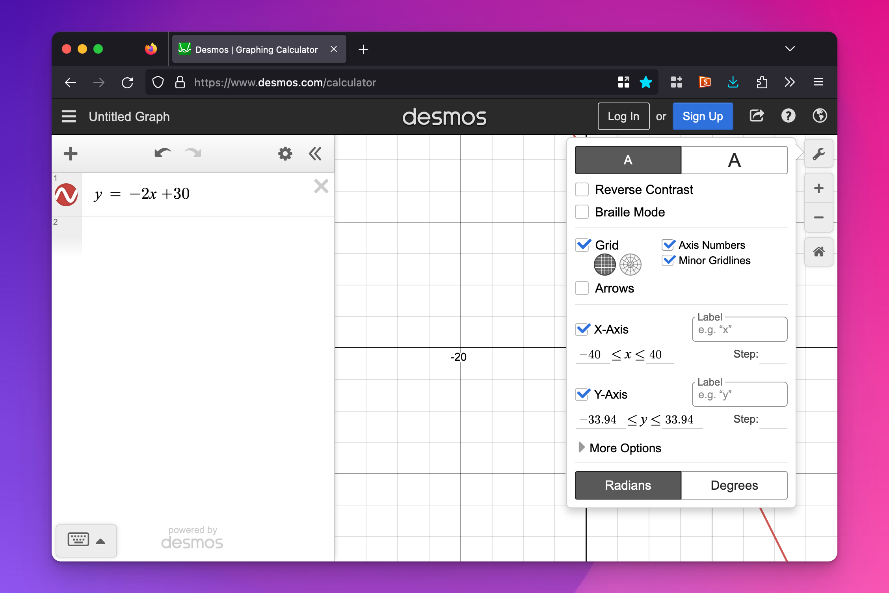
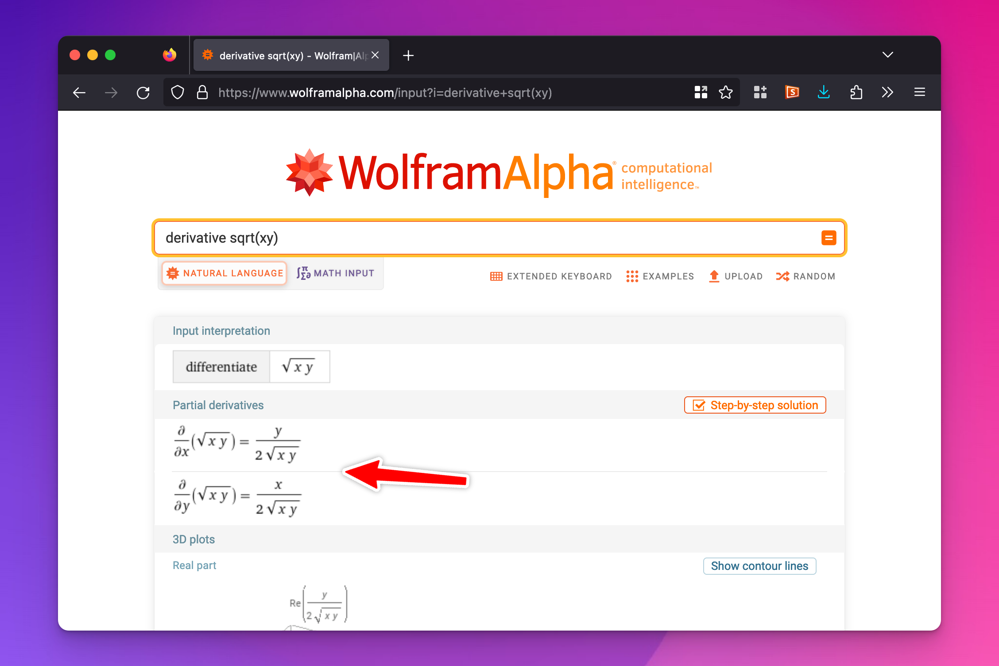
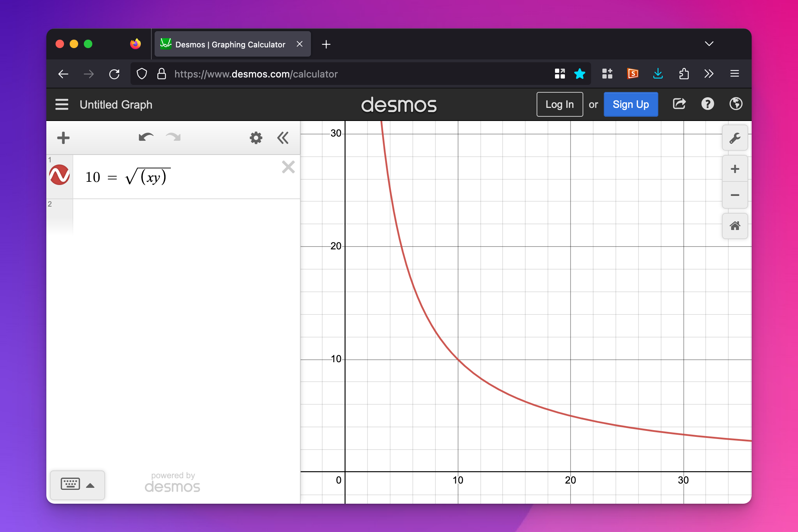

Week 3 FAQs
Hi everyone!
I just finished going through your problem sets and weekly reports and I’m still really happy with how much you all are learning! Great work everyone!
A few common questions/comments really quick for you based on your problem sets and weekly check-ins:
Weekly check-ins for double-session weeks
Sessions 5/6 (and 7/8 and 9/10) are doubled up, which slightly complicates the weekly check-ins. If you look at the instructions for these weekly check-ins (like weekly check-in 4), it says “we’re spending two sessions for this topic, so think of additional interesting and muddy things this week.”. So do that :)
Utility
It was unclear who was best off with question 2 in problem set 3.
Ha, yeah, that was a trick question. You can’t know who’s better off! With the waffle/bacon utility question, tons of you said that Ron Swanson was the best off because his utility score was higher than everyone else. But that’s not true! Utility is imaginary, and we all have different values and scales of utility in our head. If you really wanted to know who was better off, you’d need some sort of exchange rate calculation to compare Swanson’s, Gergich’s, and Knope’s utility scores. You can’t compare utility across people!
BUT in problem set 3, question 6, there are questions about which things individual people preferred? I thought utility is imaginary?
Lots of you said that it is impossible to know which combination of pizza and yogurt would make Michael the happiest, since utility is imaginary. Comparing utility across individuals is indeed impossible, but comparing utility within a single person isn’t impossible or imaginary. We know his preferences—that’s what the utility function is for.
Why can’t we compare utility across people? Everything is measured in utils, so can’t we compare those same values?
You can’t measure utility because there’s no universal method for doing so. If you ask someone how many “happiness points” they get from eating ramen, they might say 10 or 2.3 or 1000. They can make utility comparisons for themselves—like, if they like spaghetti more than ramen, then maybe spaghetti gives them 50 points and ramen just 10. But they can’t compare utility with other people. I might get 80 utils from ramen, while someone else gets 10, but my 80 could be on a completely different scale as the other person’s 10.
Imagine that utils are like different currencies—dollars, pesos, euros, and yen are all ways of measuring prices, but you can’t say that $20 is better or worse than €20 unless you know the exchange rate. And there is no exchange rate for happiness points. Within a country, I know that $10 is more than $5, but without an exchange rate, I have no idea if $10 is better than €20 is better than £5 etc.
Desmos
Plotting production possibility curves with Excel is hard.
Yep! Don’t do it! Do it by hand and take a picture, or use a drawing app on your computer. This will be important when we get to supply and demand graphs later in the semester too. One fun thing about economics is that you don’t need to be super exact with graphs. By-hand back-of-the-envelope graphs are fine for lots of things.
I plotted something in Desmos and it didn’t show up?!
Most of the time when you plot something in Desmos and it doesn’t show up, it’s because of zooming. In problem set 4, you’ll plot y = -2x + 30. When you type that in Desmos initially, you won’t see anything because by default Desmos only shows from −10 to 10 on both the x and y axes.

Zoom out and you’ll see it.

You’ll run into similar problems with a couple questions on problem set 5—it will look like two lines are parallel, when really they’re not because they cross way out at like x = 2000ish (but where y = 3ish, so it’ll look really flat still—you can use the plot settings in Desmos to control axes independently, so you might want to have the y axis go from 0 to 5 and the x axis go from 0 to 4000 or something)

Disappearing math symbols
Lots of the problem sets will have math symbols that Word can’t really handle very well. Most economics problem sets (and the answer keys for this class) are actually written in a weird mathematical typesetting language named LaTeX because of the math notation; the fancy math that shows up on the course website is an HTML version of LaTeX formulas. So if you copy/paste questions into Word, be aware that not all symbols will necessarily transfer over correctly (like square roots, exponents, subscripts, and other things).
\(e\) and natural logs
What the heck are \(e\) and ln() really? These formulas look like magic spell incantations.
This is true. Logarithms (especially natural logarithms) are weird. The number \(e\) deals with growth over time, and the natural log (ln) reverses that. You should check out these quick extra resources to learn more about what \(e\) and ln are:
More about slopes and derivatives
If you want a little bit more detail about slopes and derivatives (including some more basic plots and animations!), check out the ‘What does “marginal” even mean in the first place?’ section of this blog post. You can safely ignore the rest of the post—it’s written for stats purposes, but the basic overview of derivatives and slopes should be helpful (and there’s a section on “marginal things in economics” that is applicable).
Partial derivatives and Wolfram Alpha
In question 6 on problem set 3, the utility function was \(U = \sqrt{xy}\),and I told you that the derivative was \(\frac{y}{x}\). In the example for utility maximization, the utility function was \(U = xy\) and the derivative was also \(\frac{y}{x}\). What gives? These two different utility functions have the same slope? Yep.
Additionally, if you type derivative sqrt(xy) into Wolfram Alpha, you won’t get \(\frac{y}{x}\)—you’ll get something completely different:

That does actually show you the correct derivative, but because there are multiple variables (\(x\) and \(y\)), you need to do a little extra manual work. Derivatives are slopes, but when you’re working with two different variables, the slope depends on the two different values of \(x\) and \(y\).
For instance, the slope of this curve (\(10 = \sqrt{xy}\)) is really steep and negative when \(x\) values are low and \(y\) values are high; the slope is really shallow and negative when x values are high and \(y\) values are low:

The slope of the overall line is a combination of the partial derivatives for \(x\) and \(y\), or the slope of the line when \(y\) is held to a single value (the \(x\) part of the slope, or \(\partial x\)) and the slope of the line when \(x\) is held to a single value (the \(y\) part of the slope, or \(\partial y\))
\[ \frac{\partial / \partial x}{\partial / \partial y} \]
(That means “the partial derivative of the x part” divided by “the partial derivative of the y part”)
This is what Wolfram Alpha shows you—the two partial derivatives:
If you divide those two parts, the \(x\)-based partial derivative over the \(y\)-based partial derivative, you get this:
\[ \frac {\displaystyle \quad \frac{y}{2 \sqrt{xy}} \quad} {\displaystyle \quad \frac{x}{2 \sqrt{xy}} \quad} \]
Those gross \(2 \sqrt{xy}\) things disappear because of how dividing fractions works (multiply by the inverse):
\[ \require{cancel} \frac{y}{2 \sqrt{xy}} \times \frac{2 \sqrt{xy}}{x}\quad=\quad \frac{y}{\xcancel{2 \sqrt{xy}}} \times \frac{\xcancel{2 \sqrt{xy}}}{x} \quad = \quad \frac{y}{x} \]
That’s where the \(\frac{y}{x}\) derivative comes from.